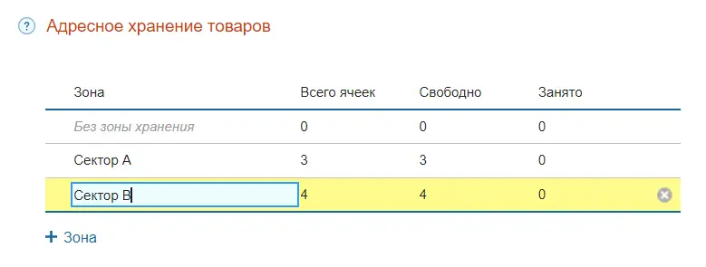
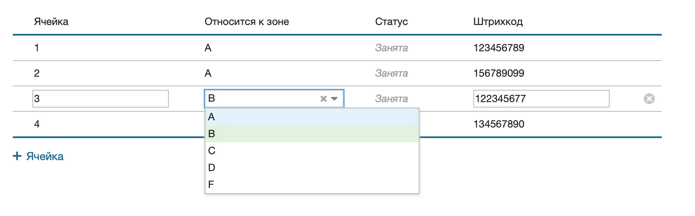
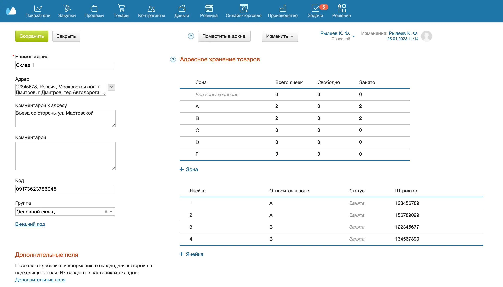
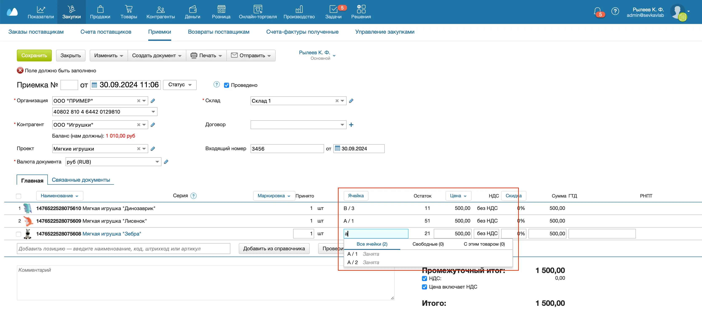
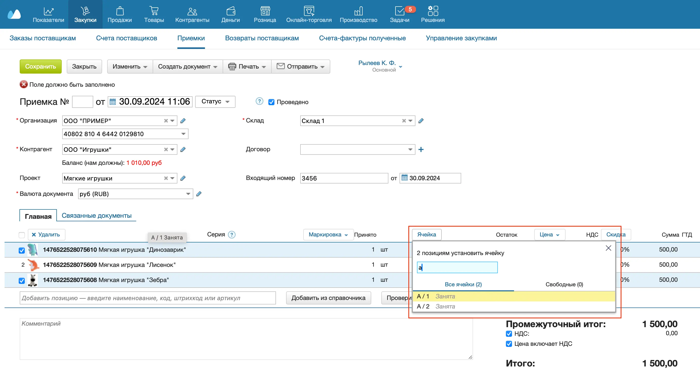
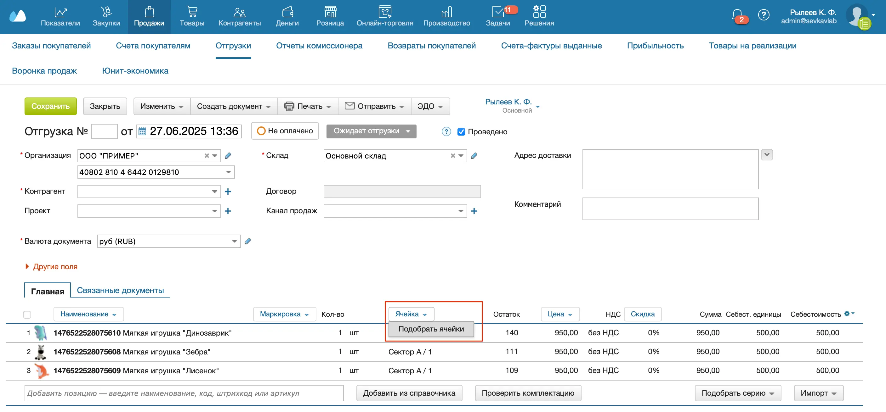
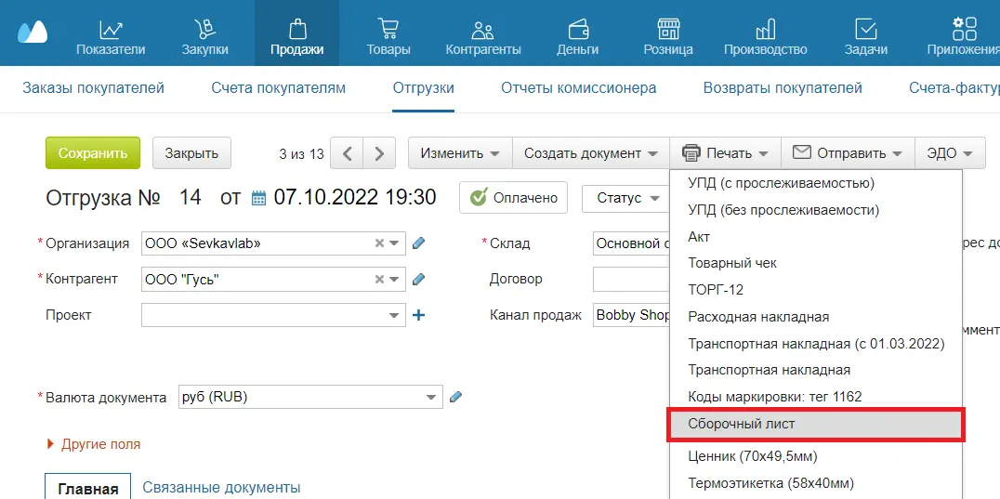
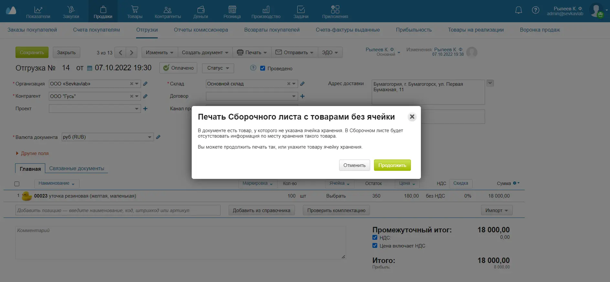

Адресное хранение — это деление склада на несколько зон и ячеек. Товар можно принимать, хранить, перемещать и отгружать из конкретных ячеек. Для этого в документах необходимо указать название (адрес) ячейки, в которой нужно разместить или из которой нужно забрать товар.
Если на складе используется адресное хранение, инвентаризация проводится по ячейкам.
Создание ячеек
- Перейдите в раздел Склад → Склады.
- Откройте склад, который вы хотите разбить на ячейки, или создайте новый.
- Справа в разделе Адресное хранение товаров нажмите кнопку +Зона, чтобы разделить склад на зоны хранения. Для склада можно создать не более 10 зон.

- Нажмите +Ячейка, чтобы добавить ячейки и укажите данные ячейки: название, зону хранения и штрихкод.

- Нажмите на кнопку Сохранить вверху.

Работа с ячейками в документах
При создании Приемки, Оприходования, Отгрузки, Перемещения, Списания, Возврата покупателя и Возврата поставщику укажите название (адрес) ячейки, в которой нужно разместить или из которой нужно забрать товар. Рассмотрим работу с ячейками на примере Приемки.
- Перейдите в раздел Закупки → Приемки.
- Нажмите на кнопку +Приемка.
- Выберите склад с ячейками, на который хотите принять товар.
- Добавьте товары, которые хотите принять.
- Укажите ячейку товара, в которую нужно принять товар:
Чтобы выбрать ячейку для одного товара, в строке товара в колонке Ячейка наведите курсор и кликните на пустое поле. Чтобы найти нужную ячейку, начните вводить ее наименование или штрихкод. В выпадающем списке выберите нужную ячейку.

Чтобы задать одну ячейку для нескольких товаров, отметьте товары галочкой, нажмите на заголовок колонки Ячейка и выберите ячейку. Для всех выбранных товаров будет задана эта ячейка.
Если товары не были отмечены, ячейка устанавливается для всех товаров, у которых она не была указана.

- В колонке Принято укажите количество товара, которое хотите разместить в выбранной ячейке.
- Укажите цену товаров и скидку, если необходимо.
- Нажмите на кнопку Сохранить вверху.
При работе с адресным хранением в Отгрузке можно подбирать ячейки автоматически. Для этого в документе Отгрузка нажмите на заголовок Ячейка и выберите Подобрать ячейки. Доступно только на платных и пробном тарифах.

Печать Сборочного листа
Для удобства комплектации можно распечатать Сборочный лист. В нем указываются зона и ячейка, откуда был отгружен товар (поле Ячейка).
- Перейдите в раздел Продажи → Отгрузки.
- Выберите Отгрузку из списка. Откроется окно редактирования документа.
- Нажмите на кнопку Печать вверху и выберите Сборочный лист в выпадающем списке.

- Если в документе есть товары, у которых не указана ячейка хранения, на экране появляется уведомление.
Чтобы распределить товар по ячейкам, нажмите на кнопку Отменить и внесите нужные изменения.
Чтобы распечатать Сборочный лист с нераспределенными по ячейкам товарами, нажмите на кнопку Продолжить.

- Выберите формат печати.
- Нажмите Да.
Остатки по ячейкам
- Перейдите в раздел Товары → Остатки.
- Переключите режим отчета в состояние По ячейкам.